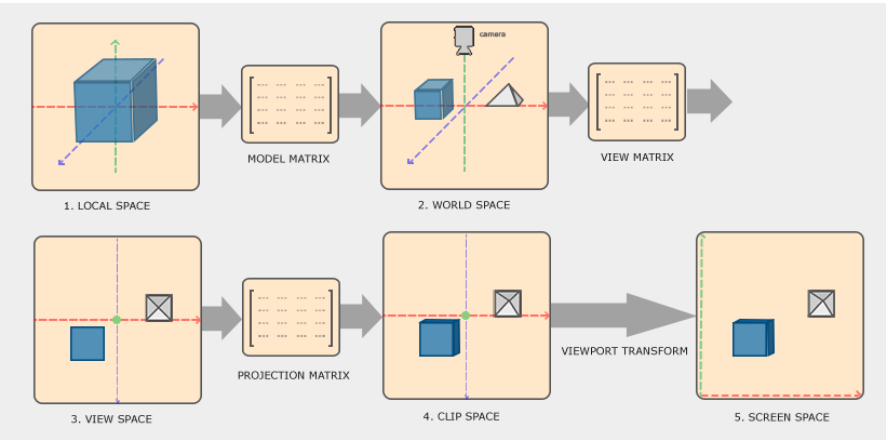
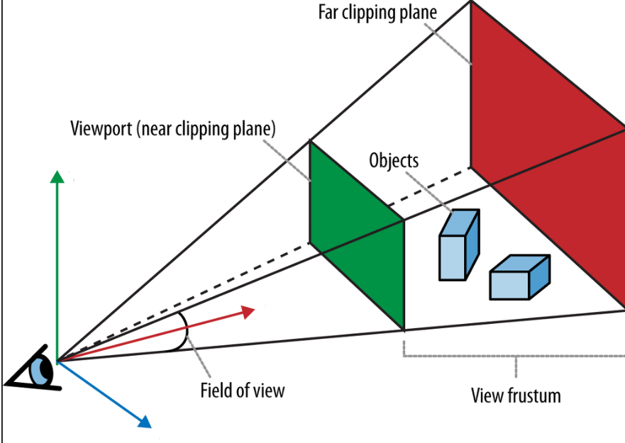

13/14/2025
In my journey into graphics, I find it hard to follow Graphics API tutorials, such as learnopengl.com, for its tedious boilerplate code. I came across this recommendation by Eric Arnebäck, saying one should start by learning the pipeline first without any API by building a software rasterizer (CPU rasterizer) and a software ray tracer (altho this one is heavily embarrassed by the absent of GPU paralleism). We will start building a CPU rasterizer first, following the algorithm from this paper: Triangle Scan Conversion using 2D Homogeneous Coordinates (there are many others method but I think this is the most well known) and Tayfun Kayhan's . We will build a ray tracer later on, as it will teach us all about lighting physics.
The goal of this part is to put a colored triangle on the screen, starting from just 3 vertices.
Before we start, we will need a couple things:
- basic linear algebra: dot product, transformation matrix (only 4x4): translation, rotation, scale
- C++ and GLM library for math
And keep in mind, we don't need any APIs, and the result will only be images and not real-time 3D rendering (CPU goes boom).
We will try to mimic how images are rendered within a GPU without using it,
but do understand that this is only the graphics foundation concept.
Without GPU parallelism, our rasterizer will be a million times slower.
Let's first create our header file:
// our first triangle
glm::vec3 v0(-0.5, 0.5, 1.0);
glm::vec3 v1(0.5, 0.5, 1.0);
glm::vec3 v2(0.0, -0.5, 1.0);We have 3 vertices in NDC space (normalized device coordinates).
The vector3 format will be (x, y, w) as x and y will be the screen normalized coordinates.
w is the depth, but we are dealing with 2D first so let's just leave it at 1.0, we will get more into w in part 2.
We need the vertices to be in raster-space (real screen-size space) before we actually put them on the screen.
// NDC to raster function definition
#define TO_RASTER(v) glm::vec3((g_scWidth * (v.x + 1.0f) / 2), (g_scHeight * (v.y + 1.f) / 2), 1.0f)
// apply
v0 = TO_RASTER(v0);
v1 = TO_RASTER(v1);
v2 = TO_RASTER(v2);Okay now we have the vertices of the triangle in raster-space.
In order to find the coordinates of the pixels that are in the triangle,
we need to find the condition that those pixels' coordinates need to match.
Then, we loop through all the pixels on the screen (millions of them) and calculate if their condition match.
Now let's go find that condition.
We already know from basic linear algebra that if the 3 vertices are independent and the plane that they are in doesn't have the space origin (0.0, 0.0, 0.0),
the linear combination of them can fill the whole 3D space.
So we can think of the set of the vertices we are looking for is also linear combinations of those 3 vertices, with some more additional information.
Those linear combinations will be the component of the edge function, which is the condition we are going to find. An edge function, is simply a way to know if the vertex is on which side of the triangle's edge.
as you can see from the image above, for each edge of our triangle, we have 3 equations, which make it 9 equations in total. Put them all together and we have this system of linear equations:
To value of the unknown matrix is simply found by multiplying the Identity matrix with the inverse of M (our already known matrix). That's it, we know how to tell if a vertex is within our triangle. Now we only need to loop them through every screen pixels:
for (auto y = 0; y < g_scHeight; y++)
{
for (auto x = 0; x < g_scWidth; x++)
{
// correct position of pixels
glm::vec3 sample = { x + 0.5f, y + 0.5f, 1.0f };
// Evaluate edge functions at every fragment
float` `alpha = glm::dot(E0, sample);
float` `beta = glm::dot(E1, sample);
float` `gamma = glm::dot(E2, sample);
if ((alpha >= 0.0f) && (beta >= 0.0f) && (gamma >= 0.0f))
{
frameBuffer[x + y * g_scWidth] = glm::vec3(1, 0, 0);
}
}
}If all went well, we will find the output to be a red triangle on a black screen
What we went through in part 1, is basically rasterization itself at its most simple form. But 3D isn't just one triangle. An object in 3D space will be made of many triangles, and vertices coordinate won't start from x, y, w NDC space. Let's take a look of the whole space transformation pipeline with this image from learnOpenGL:
What we covered in part 1 is stage 4 and 5, which we declared 3 vertices in NDC space, then transform it into screen space.
Now we need to start from the beginning,
at the space where an 3D object is first created in probably every 3D application (maya, blender, etc...)
Local space works just like its name, very intuitive.
It's just a space where the object's pivot is the center/origin of the whole 3D space, where you can do all sort of vertices transformation.
Then, that whole space (which means all vertices of that object) will be applied with model matrix,
so it can have its position, scale, rotation in the world space.
First, let's setup the vertices:
// our cube
glm::vec3 vertices[] =
{
{ 1.0f, -1.0f, -1.0f },
{ 1.0f, -1.0f, 1.0f },
{ -1.0f, -1.0f, 1.0f },
{ -1.0f, -1.0f, -1.0f },
{ 1.0f, 1.0f, -1.0f },
{ 1.0f, 1.0f, 1.0f },
{ -1.0f, 1.0f, 1.0f },
{ -1.0f, 1.0f, -1.0f },
};
uint32_t` `indices[] ={
1,3,0, 7,5,4, 4,1,0, 5,2,1, 2,7,3, 0,7,4, 1,2,3, 7,6,5, 4,5,1, 5,6,2, 2,6,7, 0,3,7
};We are trying to create a **cube**.
A cube has 6 faces, and a face has 2 triangles, which makes it **12 triangles and 8 vertices** in total.
The vertices array are just (x, y ,z) coordinates of the vertices.
And indices array will be implying which sets of 3 vertices we want to make an triangle.
As you can see, there are 3x12=36 indices in the indices array. We are not touching this snippet for a while.
Now let's talk about model matrix and how do they transform our vertices from their local space into world space.
void InitializeSceneObjects(std::vector& objects)
{
4 different cubes from our original one
const` `glm::mat4 identity(1.f);
glm::mat4 M0 = glm::translate(identity, glm::vec3(0, 0, 2.f));
M0 = glm::rotate(M0, glm::radians(45.f), glm::vec3(0, 1, 0));
objects.push_back(M0);
glm::mat4 M1 = glm::translate(identity, glm::vec3(-3.75f, 0, 0));
M1 = glm::rotate(M1, glm::radians(30.f), glm::vec3(1, 0, 0));
objects.push_back(M1);
glm::mat4 M2 = glm::translate(identity, glm::vec3(3.75f, 0, 0));
M2 = glm::rotate(M2, glm::radians(60.f), glm::vec3(0, 1, 0));
objects.push_back(M2);
glm::mat4 M3 = glm::translate(identity, glm::vec3(0, 0, -2.f));
M3 = glm::rotate(M3, glm::radians(90.f), glm::vec3(0, 0, 1));
objects.push_back(M3);
}
// Let's draw multiple objects
std::vector objects;
InitializeSceneObjects(objects);
From our set of 8 vertices/cube, we will try to create 4 versions/instances from the original set. "Objects" aren't really objects yet, they are the different positions, rotations of our 4 cube instances. The model matrix is the combination of translation matrix (the new position of our object that we want to put it in the world space) and rotation matrix. We need to define an Identity matrix first. Then apply translation and rotation (in that exact order). When we finish each objects, push them into the array as we will have 4 of them (0 to 3). That's our model matrix. For now we are just declaring the properties, we are not transforming them until we have view matrix and projection matrix too. Now let's define those 2:
// view and projection
float nearPlane = 0.1f;
float farPlane = 100.f;
glm::vec3 eye(0, 3.75, 6.5);
glm::vec3 lookat(0, 0, 0);
glm::vec3 up(0, 1, 0);
glm::mat4 view = glm::lookAt(eye, lookat, up);
glm::mat4 proj = glm::perspective(glm::radians(60.f), (``float``)g_scWidth / (``float``)g_scHeight, nearPlane, farPlane);- We don't need to get too deep into the technical side of these two.
Just understand intuitively that view matrix is how and where we put our eyes/camera in the world space,
and the direction we are looking at.
And in the end, we will put all the images into the image plane where w=1.0 (which is exactly the w value of part 1!!!)
- We need to loop through all the objects, and in each loops, we loop through all its triangles.
The pixels loop from part 1 will be put inside each triangles' loop, but we are not touching it yet.
// We're gonna fetch object-space vertices from the vertex buffer indexed by the values in index buffer
// and pass them directly to each VS invocation
const glm::vec3& v0 = vertices[indices[idx * 3]];
const glm::vec3& v1 = vertices[indices[idx * 3 + 1]];
const glm::vec3& v2 = vertices[indices[idx * 3 + 2]];- We need to make a Vertex Shader function (where we put our triangle through those model, view and projection matrices)
glm::vec4 VS(const glm::vec3& pos, const glm::mat4& M, const glm::mat4& V, const glm::mat4& P)
{
return (P * V * M * glm::vec4(pos, 1.0f));
}
// Invoke function for each vertex of the triangle to transform them from object-space to clip-space (-w, w)
glm::vec4 v0Clip = VS(v0, objects[n], view, proj);
glm::vec4 v1Clip = VS(v1, objects[n], view, proj);
glm::vec4 v2Clip = VS(v2, objects[n], view, proj);After this point, we have our vertices in 3D clip space with a vector4 format (x, y, z, w). The range of our 4 values will be in \[-w, w] and in normal GPU pipeline, this is where we devine all values with w so the they will be normalized \[-1, 1]. But with our 2D homogeneous rasterization, we won't do that for now for 2 reason: some Ws will be zero so we will find ourselves with division by zero (in real pipeline we have a way to get around that but it's too complicated for our CPU rasterizer), and the second reason is division is much more slower than addition or multiplication without the architecture of a GPU.
glm::vec4 v0Homogen = TO_RASTER(v0Clip);
glm::vec4 v1Homogen = TO_RASTER(v1Clip);
glm::vec4 v2Homogen = TO_RASTER(v2Clip);
glm::mat3 M =
{
// Notice that glm is itself column-major
{ v0Homogen.x, v1Homogen.x, v2Homogen.x},
{ v0Homogen.y, v1Homogen.y, v2Homogen.y},
{ v0Homogen.w, v1Homogen.w, v2Homogen.w},
};- this is what we learned in part 1.
The key here is we use w coordinates instead of z ones,
for the 2 values at this stage is equal, and all used to demonstrate a vertex's distance to our camera/eyes
- Another thing, we only want to render the faces that are facing the camera. So a determinant of our M matrices will help:
// If det(M) == 0.0f, we'd perform division by 0 when calculating the invert matrix,
// whereas (det(M) > 0) implies a back-facing triangle
float det = glm::determinant(M);
if (det >= 0.0f)
continue;
// Compute the inverse of vertex matrix to use it for setting up edge & constant functions
M = inverse(M);
// Set up edge functions based on the vertex matrix
glm::vec3 E0 = M[0];
glm::vec3 E1 = M[1];
glm::vec3 E2 = M[2];- Now there's one important problem we need to solve: depth test.
// Calculate constant function to interpolate 1/w
glm::vec3 C = M * glm::vec3(1, 1, 1);- epth test, visibility test, hidden surface removal,.. whatever we want to call it.
It's simply an algorithm to check which triangle is in front of others and render that triangle.
This works very similarly to our basic find max algorithm.
"C" is just the constant we make up, with equals to 1/w value.
The smaller w is, the bigger 1/w will be, and the closer a triangle is to our camera.
That's how we find the closest triangle's pixels to render.
- We need an array to put our "max" into, we will call it the depth buffer, and declare it before our loop:
// Allocate and clear the depth buffer (not z-buffer but 1/w-buffer in this part!) to 0.0
std::vector depthBuffer(g_scWidth * g_scHeight, 0.0); Now let's put the whole loop together:
void Go3D()
{
// Setup vertices & indices to draw an indexed cube
glm::vec3 vertices[] =
{
{ 1.0f, -1.0f, -1.0f },
{ 1.0f, -1.0f, 1.0f },
{ -1.0f, -1.0f, 1.0f },
{ -1.0f, -1.0f, -1.0f },
{ 1.0f, 1.0f, -1.0f },
{ 1.0f, 1.0f, 1.0f },
{ -1.0f, 1.0f, 1.0f },
{ -1.0f, 1.0f, -1.0f },
};
uint32_t indices[] =
{
// 6 faces of cube * 2 triangles per-face * 3 vertices per-triangle = 36 indices
1,3,0, 7,5,4, 4,1,0, 5,2,1, 2,7,3, 0,7,4, 1,2,3, 7,6,5, 4,5,1, 5,6,2, 2,6,7, 0,3,7
};
// Use per-face colors
glm::vec3 colors[] =
{
glm::vec3(0, 0, 1),
glm::vec3(0, 1, 0),
glm::vec3(0, 1, 1),
glm::vec3(1, 1, 1),
glm::vec3(1, 0, 1),
glm::vec3(1, 1, 0)
};
// Allocate and clear the frame buffer before starting to render to it
std::vector frameBuffer(g_scWidth * g_scHeight, glm::vec3(0, 0, 0)); // clear color black = vec3(0, 0, 0)
// Allocate and clear the depth buffer (not z-buffer but 1/w-buffer in this part!) to 0.0
std::vector depthBuffer(g_scWidth * g_scHeight, 0.0);
// Let's draw multiple objects
std::vector objects;
InitializeSceneObjects(objects);
// Build view & projection matrices (right-handed sysem)
float nearPlane = 0.1f;
float farPlane = 100.f;
glm::vec3 eye(0, 3.75, 6.5);
glm::vec3 lookat(0, 0, 0);
glm::vec3 up(0, 1, 0);
glm::mat4 view = glm::lookAt(eye, lookat, up);
glm::mat4 proj = glm::perspective(glm::radians(60.f), static_cast(g_scWidth) / static_cast(g_scHeight), nearPlane, farPlane);
// Loop over objects in the scene
for (size_t n = 0; n < objects.size(); n++)
{
// Loop over triangles in a given object and rasterize them one by one
for (uint32_t idx = 0; idx < ARR_SIZE(indices) / 3; idx++)
{
// We're gonna fetch object-space vertices from the vertex buffer indexed by the values in index buffer
// and pass them directly to each VS invocation
const glm::vec3& v0 = vertices[indices[idx * 3]];
const glm::vec3& v1 = vertices[indices[idx * 3 + 1]];
const glm::vec3& v2 = vertices[indices[idx * 3 + 2]];
// Invoke function for each vertex of the triangle to transform them from object-space to clip-space (-w, w)
glm::vec4 v0Clip = VS(v0, objects[n], view, proj);
glm::vec4 v1Clip = VS(v1, objects[n], view, proj);
glm::vec4 v2Clip = VS(v2, objects[n], view, proj);
// Apply viewport transformation
// Notice that we haven't applied homogeneous division and are still utilizing homogeneous coordinates
glm::vec4 v0Homogen = TO_RASTER(v0Clip);
glm::vec4 v1Homogen = TO_RASTER(v1Clip);
glm::vec4 v2Homogen = TO_RASTER(v2Clip);
// Base vertex matrix
glm::mat3 M =
{
// Notice that glm is itself column-major
{ v0Homogen.x, v1Homogen.x, v2Homogen.x},
{ v0Homogen.y, v1Homogen.y, v2Homogen.y},
{ v0Homogen.w, v1Homogen.w, v2Homogen.w},
};
// Singular vertex matrix (det(M) == 0.0) means that the triangle has zero area,
// which in turn means that it's a degenerate triangle which should not be rendered anyways,
// whereas (det(M) > 0) implies a back-facing triangle so we're going to skip such primitives
float det = glm::determinant(M);
if (det >= 0.0f)
continue;
// Compute the inverse of vertex matrix to use it for setting up edge & constant functions
M = inverse(M);
// Set up edge functions based on the vertex matrix
glm::vec3 E0 = M[0];
glm::vec3 E1 = M[1];
glm::vec3 E2 = M[2];
// Calculate constant function to interpolate 1/w
glm::vec3 C = M * glm::vec3(1, 1, 1);
// Start rasterizing by looping over pixels to output a per-pixel color
for (auto y = 0; y < g_scHeight; y++)
{
for (auto x = 0; x < g_scWidth; x++)
{
// Sample location at the center of each pixel
glm::vec3 sample = { x + 0.5f, y + 0.5f, 1.0f };
// Evaluate edge functions at current fragment
bool inside0 = EvaluateEdgeFunction(E0, sample);
bool inside1 = EvaluateEdgeFunction(E1, sample);
bool inside2 = EvaluateEdgeFunction(E2, sample);
// If sample is "inside" of all three half-spaces bounded by the three edges of the triangle, it's 'on' the triangle
if (inside0 && inside1 && inside2)
{
// Interpolate 1/w at current fragment
float oneOverW = (C.x * sample.x) + (C.y * sample.y) + C.z;
// Perform depth test with interpolated 1/w value
// Notice that the greater 1/w value is, the closer the object would be to our virtual camera,
// hence "less_than_equal" comparison is actually oneOverW >= depthBuffer[sample] and not oneOverW <= depthBuffer[sample] here
if (oneOverW >= depthBuffer[x + y * g_scWidth])
{
// Depth test passed; update depth buffer value
depthBuffer[x + y * g_scWidth] = oneOverW;
// Write new color at this fragment
frameBuffer[x + y * g_scWidth] = colors[indices[3 * idx] % 6];
}
}
}
}
}
}
// Rendering of one frame is finished, output a .PPM file of the contents of our frame buffer to see what we actually just rendered
OutputFrame(frameBuffer, "../render_go_3d.ppm");
} - Summary of part 2:
We have a depth buffer and a frame buffer outside of our loop
(it will be used to solve the depth test problem and render the color of the closests).
We will loop through every objects, and in those loops we will loop through its triangles.
In that triangle loop, we transform the triangle's vertices from object space to finally clip space.
We calculate the M, E matrices based on our new values.
Then comes the part 1 loop, and only when we knew the pixel is in our triangle,
then we will make a depth test to see if it's closer to our camera than the current pixel in the depth buffer.
And only when it's closer, we will put the color into our frame buffer.
- That's it for part 2. we have already render some 3D cubes with a sense of perspective onto our screen!